Hello.
Select Design Works from, Jay Patel.
UK based Graphic and User Interface Designer
Cine Asia
Application Design
Cine Asia is a concept app celebrating Asian cinema through a curated streaming experience and editorial film coverage from across the continent. Designed with a clean, intuitive interface, it keeps discovery simple, focused, and enjoyable.
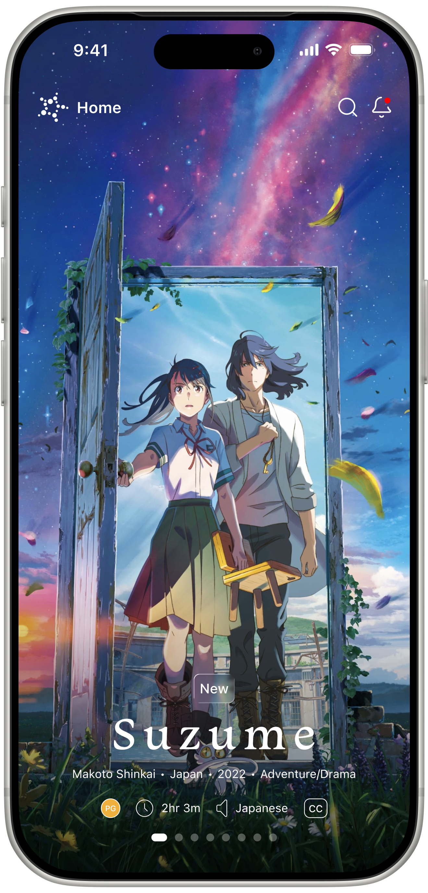
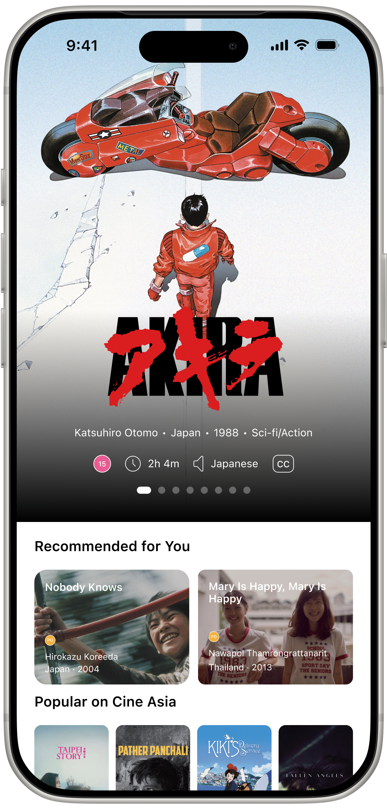
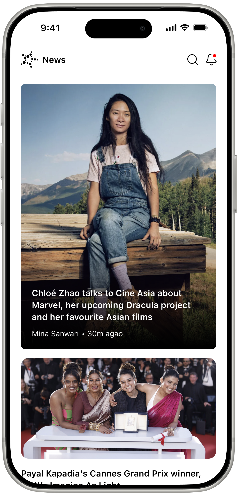
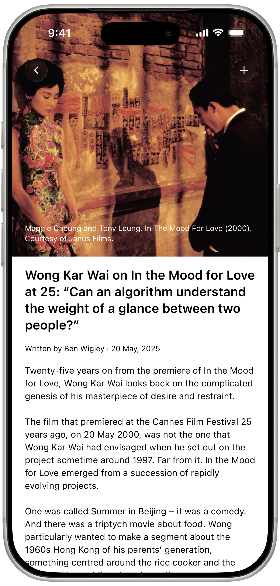
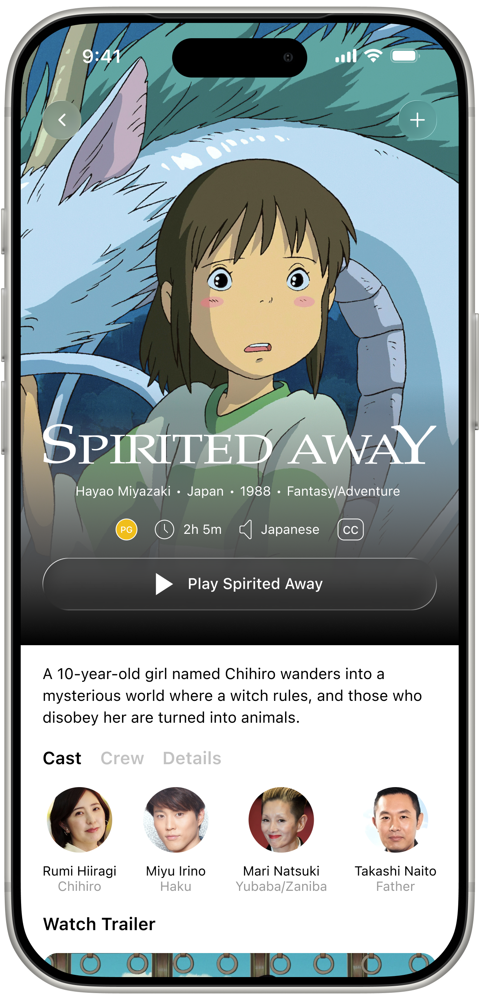
Little Hands
Branding and App Design
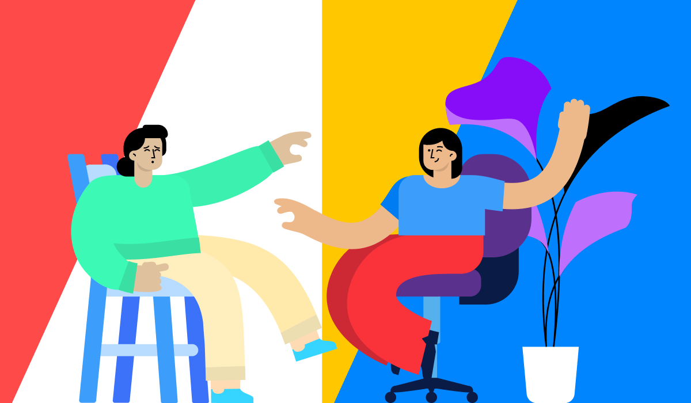
Little Hands is a job board built to connect freelancers and professionals with new opportunities, while also making it easy for businesses to post roles and find talent. The project included developing the brand identity and overall interface design, with a focus on clarity, usability, and a clean modern feel that works seamlessly for both sides of the platform. Illustrations by Blush Design.
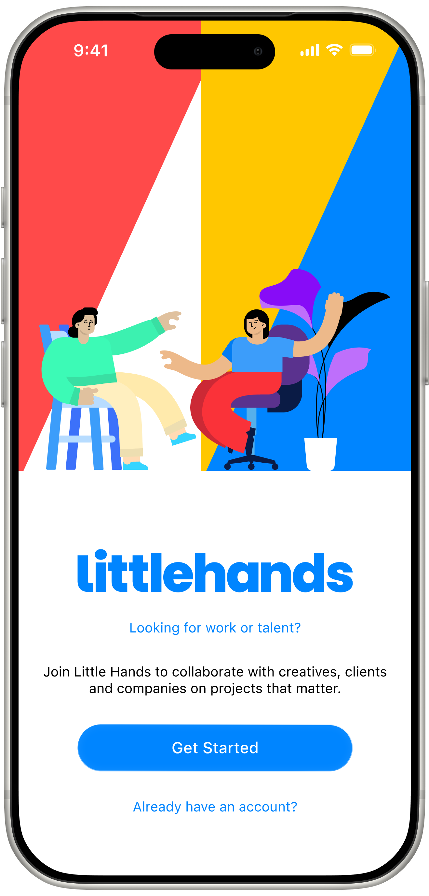
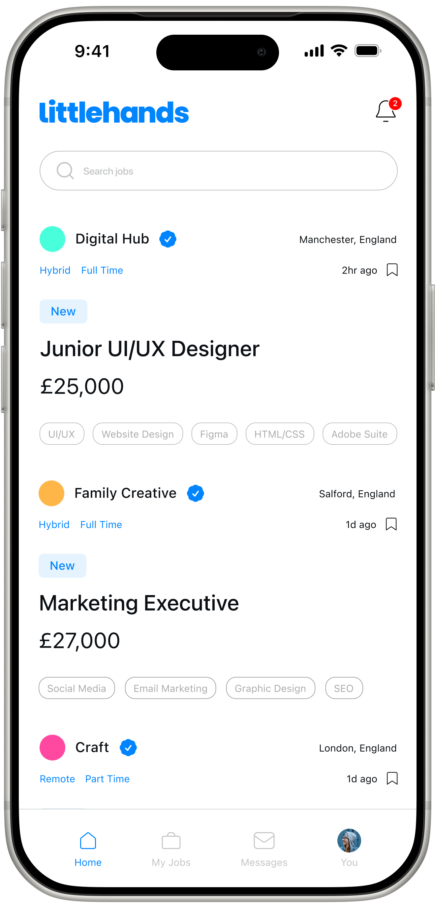
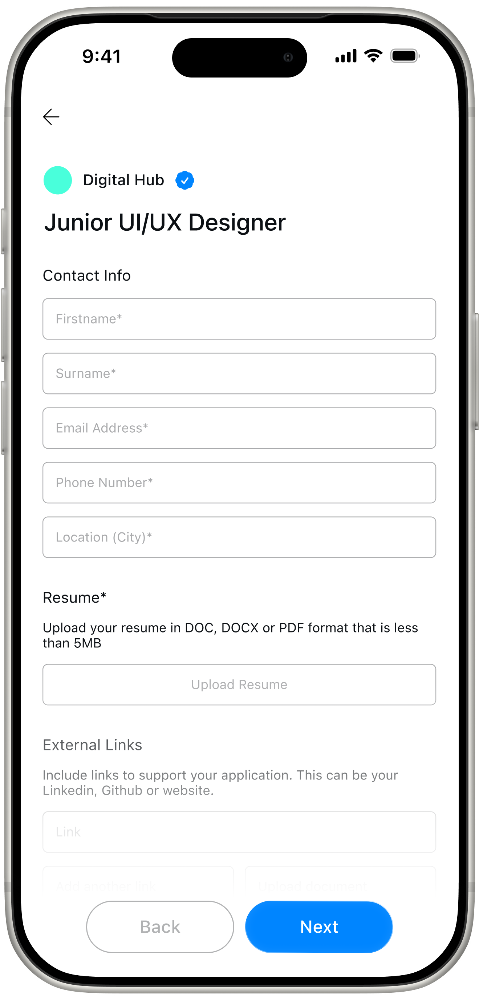
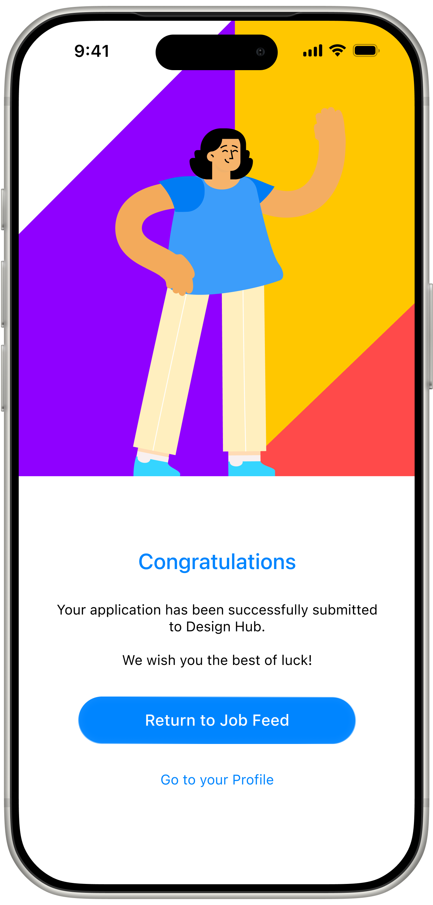
Regen
Branding and Web Design
Regen is a US-based health startup offering premium vitamins and powder-based supplements. The project involved designing the brand identity, website, and product packaging to establish a clean, modern look that reflects the brand’s premium positioning and progressive approach to wellness.
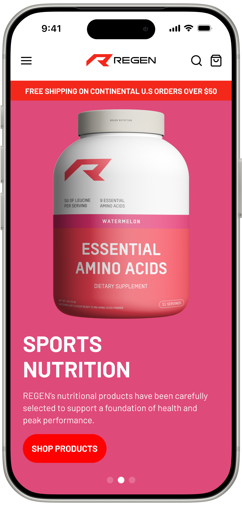
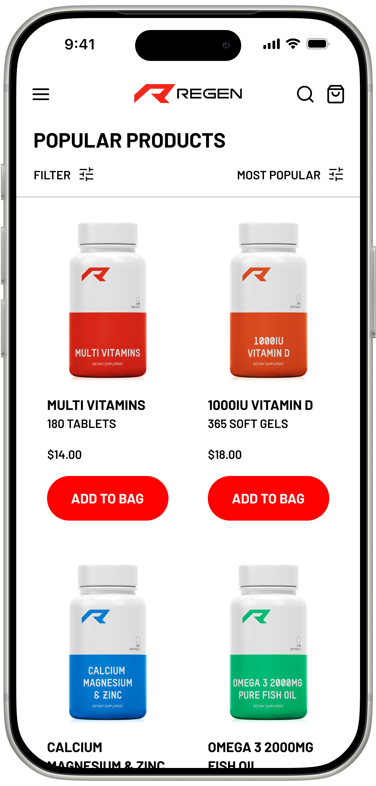
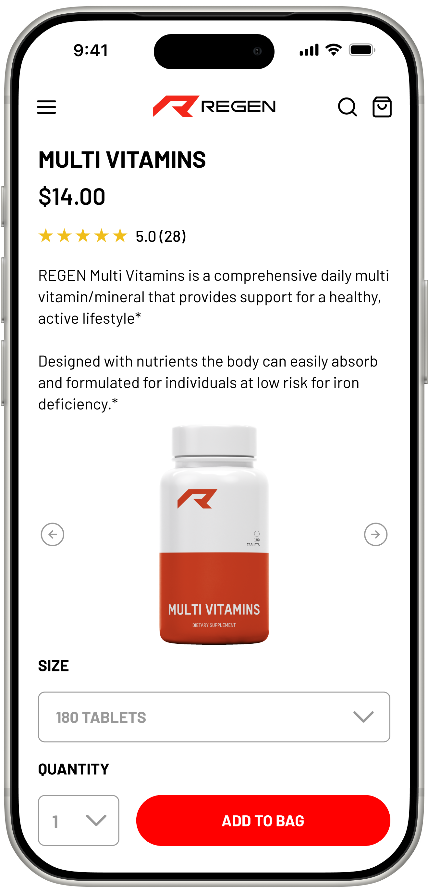
Bodi
Branding and Web Design
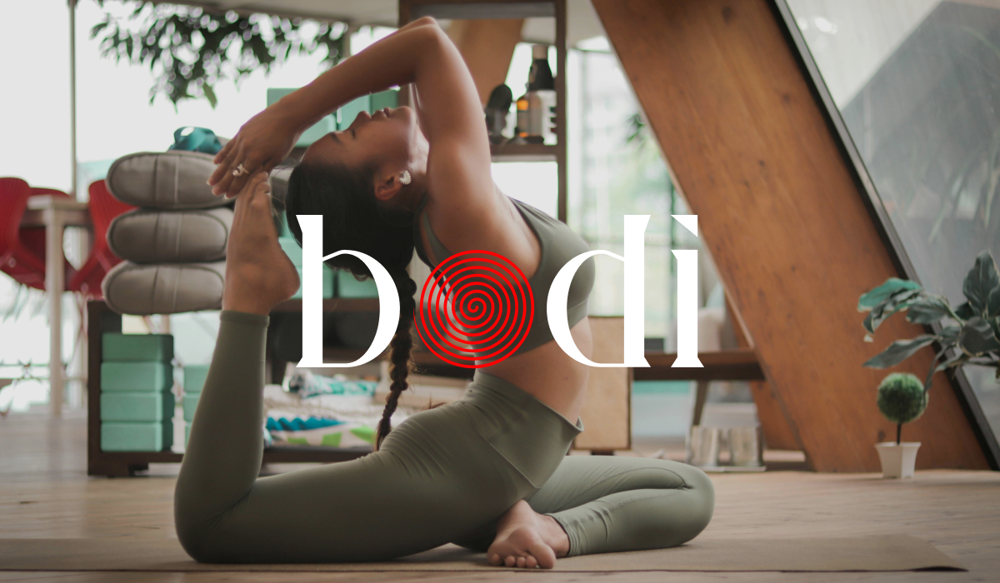
Bodi is a US-based startup bringing yoga into the home through online classes and stylish apparel. The project involved developing the brand identity and designing the website to create a clean, contemporary look that reflects the brand’s approachable and inspiring take on yoga.